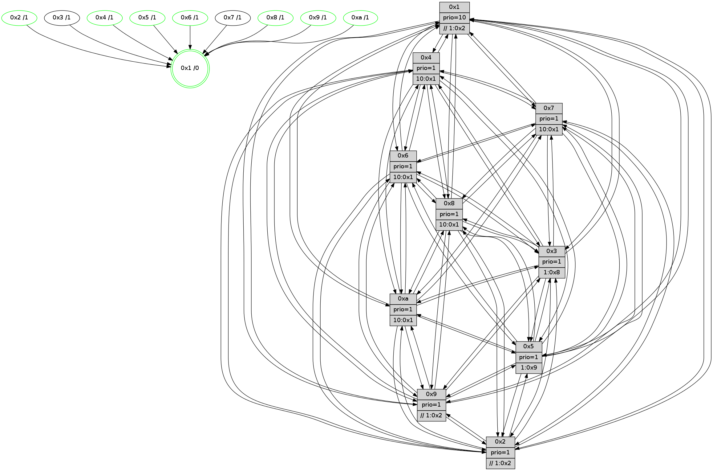

>> << IDX [start] -100 -25 -5 +0 +5 +25 +100 [755.458080053]
 Previous packets
750.001145 beacon07(faad) #0 coord=01,02,03,04,05,06,07,0a,09,08 cycle=688.0ms assoc 64 57 b3
750.011150 beacon0a(faad) #0 coord=01,02,03,04,05,06,07,0a,09,08 cycle=688.0ms assoc 64 26 b8
750.021152 beacon09(faad) #0 coord=01,02,03,04,05,06,07,0a,09,08 cycle=688.0ms assoc 64 a8 6f
750.031150 beacon08(faad) #0 coord=01,02,03,04,05,06,07,0a,09,08 cycle=688.0ms assoc 64 d2 22
750.045248 [Color(4) seq=110 @0:0 prio=1 >10.@1,1.@2,1.@3,1.@5]
750.047054 [Color(6) seq=134 @0:0 prio=1 >10.@1,1.@8,1.@9,1.@a]
750.048704 [Hello(5): seq=481 sym=7,6,4,3,1,9,8,10,2 sysInfo=hasWarning stat=7:9,8,13,5/6:6,9,11,7/4:3,1,0,5/3:8,0,2,6/1:6,8,14,1/9:8,5,4,0/8:13,14,3,5/10:3,6,1,0/2:0,3,0,0]
750.051234 [STC(1) #0.75 tree-change,inconsistent-stability,stable,to-color d=0]
750.052878 [Color(1) seq=161 @0:0 prio=10 >>1.@2,1.@3,1.@5]
750.056160 [Hello(10): seq=413 sym=6,2,3,8,5,7,4,1 asym=9 sysInfo=hasWarning stat=6:14,12,11,3/2:10,0,2,2/3:0,12,15,5/8:1,14,8,7/5:13,3,6,9/7:12,10,10,3/4:5,9,0,6/1:9,11,0,1/9:13,13,4,4]
750.059031 [Hello(8): seq=424 sym=5,2,3,4,7,6,9,10,1 sysInfo=hasWarning stat=5:8,5,10,8/2:1,13,1,2/3:6,12,6,9/4:12,7,8,6/7:9,8,12,7/6:5,15,7,8/9:2,13,10,5/10:12,6,9,6/1:12,10,14,0]
750.062490 [Color(8) seq=147 @0:0 prio=1 >10.@1,1.@2,1.@3,1.@5]
750.064111 [Color(10) seq=112 @0:0 prio=1 >10.@1,1.@2,1.@3,1.@5]
750.066318 [Color(5) seq=134 @0:0 prio=1 >1.@9,1.@a]
750.068964 [Hello(2): seq=477 sym=4,5,7,6,3,9,8,10,1 sysInfo=hasWarning stat=4:14,8,5,4/5:6,13,6,1/7:3,3,14,5/6:2,11,11,6/3:3,6,3,3/9:4,7,2,0/8:2,2,3,5/10:11,7,4,5/1:5,6,9,1]
750.071438 [Color(3) seq=132 @0:0 prio=1 >1.@8,1.@9,1.@a]
750.073296 [Hello(9): seq=424 sym=2,5,3,4,7,6,8,10,1 sysInfo=hasWarning stat=2:5,7,1,0/5:2,4,1,0/3:4,4,3,8/4:8,15,5,5/7:11,13,14,5/6:6,0,9,6/8:1,5,0,0/10:1,3,0,0/1:5,3,0,1]
750.076754 [Color(9) seq=129 @0:0 prio=1 >>1.@2,1.@3,1.@5]
750.081975 [Color(2) seq=126 @0:0 prio=1 >>1.@2,1.@3,1.@5]
750.084027 [Color(7) seq=111 @0:0 prio=1]
----------------------------------------------------------------------
750.729292 beacon01(faad) #0 coord=01,02,03,04,05,06,07,0a,09,08 cycle=688.0ms assoc
-- color-indic=1 64 83 fc
750.739275 beacon02(faad) #0 coord=01,02,03,04,05,06,07,0a,09,08 cycle=688.0ms assoc 64 10 cd
750.749274 beacon03(faad) #0 coord=01,02,03,04,05,06,07,0a,09,08 cycle=688.0ms assoc 64 6a 80
750.759276 beacon04(faad) #0 coord=01,02,03,04,05,06,07,0a,09,08 cycle=688.0ms assoc 64 1d 6a
750.769276 beacon05(faad) #0 coord=01,02,03,04,05,06,07,0a,09,08 cycle=688.0ms assoc 64 67 27
750.779276 beacon06(faad) #0 coord=01,02,03,04,05,06,07,0a,09,08 cycle=688.0ms assoc 64 e9 f0
750.789276 beacon07(faad) #0 coord=01,02,03,04,05,06,07,0a,09,08 cycle=688.0ms assoc 64 93 bd
750.799282 beacon0a(faad) #0 coord=01,02,03,04,05,06,07,0a,09,08 cycle=688.0ms assoc 64 e2 b6
750.809281 beacon09(faad) #0 coord=01,02,03,04,05,06,07,0a,09,08 cycle=688.0ms assoc 64 6c 61
750.819279 beacon08(faad) #0 coord=01,02,03,04,05,06,07,0a,09,08 cycle=688.0ms assoc 64 16 2c
750.830811 [Hello(7): seq=481 sym=2,3,5,6,4,8,9,10,1 sym= sysInfo=hasWarning stat=]
750.835112 PARSE ERROR************************
Traceback (most recent call last):
File "PacketAnalysis.py", line 167, in showOperaPacket
structPacket = OperaPacketParse.parsePacket(rawPacket)
File "../../pkg-python/HipSens/Core/OperaPacketParse.py", line 461, in parsePacket
return parseHelloMessage(data)
File "../../pkg-python/HipSens/Core/OperaPacketParse.py", line 125, in parseHelloMessage
struct.unpack("!H",linkList[:2])[0])
error: unpack requires a string argument of length 2
48 34 03 00 01 e1 00 02 02 12 01 00 07 00 06 00 02 00 04 00 08 00 09 00 0a 00 05 00 53 04 00 00 00 00 4c 12 1d b0 38 f5 82 46 87 59 55 81 38 43 6d f8 6a 6c 77 53 4d 8a
750.842860 [Hello(6): seq=481 sym=2,3,5,4,7,9,8,10,1 sysInfo= stat=2:5,13,1,7/3:9,11,8,7/5:13,9,9,10/4:10,11,7,0/7:3,15,7,1/9:14,13,9,6/8:13,12,10,6/10:4,7,1,7/1:9,8,11,1]
750.847934 [STC(6)->1 #0.75 tree-change,inconsistent-stability,stable,to-color d=1]
750.851102 [Hello(4): seq=481 sym=5,7,6,2,3,9,8,10,1 sysInfo= stat=5:5,15,9,8/7:8,0,11,3/6:14,6,12,8/2:8,0,6,8/3:2,5,2,5/9:4,8,7,3/8:8,10,9,8/10:0,9,12,7/1:8,3,15,1]
750.855219 [STC(4)->1 #0.75 tree-change,inconsistent-stability,stable,to-color d=1]
----------------------------------------------------------------------
751.517425 beacon01(faad) #0 coord=01,02,03,04,05,06,07,0a,09,08 cycle=688.0ms assoc
-- color-indic=1 64 3f f9
751.527406 beacon02(faad) #0 coord=01,02,03,04,05,06,07,0a,09,08 cycle=688.0ms assoc 64 ac c8
751.537406 beacon03(faad) #0 coord=01,02,03,04,05,06,07,0a,09,08 cycle=688.0ms assoc 64 d6 85
751.547408 beacon04(faad) #0 coord=01,02,03,04,05,06,07,0a,09,08 cycle=688.0ms assoc 64 a1 6f
751.557407 beacon05(faad) #0 coord=01,02,03,04,05,06,07,0a,09,08 cycle=688.0ms assoc 64 db 22
751.567407 beacon06(faad) #0 coord=01,02,03,04,05,06,07,0a,09,08 cycle=688.0ms assoc 64 55 f5
751.577407 beacon07(faad) #0 coord=01,02,03,04,05,06,07,0a,09,08 cycle=688.0ms assoc 64 2f b8
751.587412 beacon0a(faad) #0 coord=01,02,03,04,05,06,07,0a,09,08 cycle=688.0ms assoc 64 5e b3
751.597413 beacon09(faad) #0 coord=01,02,03,04,05,06,07,0a,09,08 cycle=688.0ms assoc 64 d0 64
751.607413 beacon08(faad) #0 coord=01,02,03,04,05,06,07,0a,09,08 cycle=688.0ms assoc 64 aa 29
751.621379 [Color(7) seq=112 @0:0 prio=1]
751.622735 [Color(3) seq=133 @0:0 prio=1 >1.@8,1.@9,1.@a]
751.625203 [Hello(10): seq=414 sym=6,2,3,8,9,5,7,4,1 sysInfo=hasWarning stat=6:15,12,12,3/2:11,1,2,2/3:1,13,15,5/8:1,14,8,7/9:14,14,4,4/5:13,4,6,9/7:13,11,10,3/4:6,10,1,6/1:9,11,0,1]
751.627773 [Hello(9): seq=425 sym=2,5,3,4,7,6,8,10,1 sysInfo=hasWarning stat=2:5,8,1,0/5:2,4,1,0/3:5,4,3,8/4:9,0,6,5/7:11,14,14,5/6:7,0,10,6/8:1,5,0,0/10:1,3,0,0/1:6,3,0,1]
751.630580 [Color(9) seq=130 @0:0 prio=1 >>1.@2,1.@3,1.@5]
751.632389 [Color(6) seq=135 @0:0 prio=1 >10.@1,1.@8,1.@9,1.@a]
751.634074 [Color(4) seq=111 @0:0 prio=1 >10.@1,1.@2,1.@3,1.@5]
751.637004 [Hello(8): seq=425 sym=5,2,3,4,7,6,9,10,1 sysInfo=hasWarning stat=5:8,6,10,8/2:2,14,1,2/3:7,13,6,9/4:13,8,9,6/7:9,9,12,7/6:6,15,8,8/9:3,14,10,5/10:12,7,9,6/1:12,10,14,0]
751.640778 [Color(8) seq=148 @0:0 prio=1 >10.@1,1.@2,1.@3,1.@5]
751.643801 [Color(2) seq=127 @0:0 prio=1 >>1.@2,1.@3,1.@5]
751.647900 [Hello(5): seq=482 sym=7,6,4,3,1,9,8,10,2 sysInfo=hasWarning stat=7:9,9,13,5/6:7,9,12,7/4:4,2,1,5/3:9,1,2,6/1:6,8,14,1/9:9,6,4,0/8:13,14,3,5/10:3,6,1,0/2:1,4,0,0]
751.651968 [Color(10) seq=113 @0:0 prio=1 >10.@1,1.@2,1.@3,1.@5]
----------------------------------------------------------------------
752.305555 beacon01(faad) #0 coord=01,02,03,04,05,06,07,0a,09,08 cycle=688.0ms assoc
-- color-indic=1 64 0b e1
752.315536 beacon02(faad) #0 coord=01,02,03,04,05,06,07,0a,09,08 cycle=688.0ms assoc 64 98 d0
752.325537 beacon03(faad) #0 coord=01,02,03,04,05,06,07,0a,09,08 cycle=688.0ms assoc 64 e2 9d
752.335538 beacon04(faad) #0 coord=01,02,03,04,05,06,07,0a,09,08 cycle=688.0ms assoc 64 95 77
752.345537 beacon05(faad) #0 coord=01,02,03,04,05,06,07,0a,09,08 cycle=688.0ms assoc 64 ef 3a
752.355539 beacon06(faad) #0 coord=01,02,03,04,05,06,07,0a,09,08 cycle=688.0ms assoc 64 61 ed
752.365538 beacon07(faad) #0 coord=01,02,03,04,05,06,07,0a,09,08 cycle=688.0ms assoc 64 1b a0
752.375543 beacon0a(faad) #0 coord=01,02,03,04,05,06,07,0a,09,08 cycle=688.0ms assoc 64 6a ab
752.385542 beacon09(faad) #0 coord=01,02,03,04,05,06,07,0a,09,08 cycle=688.0ms assoc 64 e4 7c
752.395543 beacon08(faad) #0 coord=01,02,03,04,05,06,07,0a,09,08 cycle=688.0ms assoc 64 9e 31
752.407079 [Hello(4): seq=482 sym=5,7,6,2,3,9,8,10,1 sysInfo= stat=5:6,15,9,8/7:8,0,11,3/6:14,6,12,8/2:8,1,6,8/3:2,5,2,5/9:4,8,7,3/8:9,11,9,8/10:0,10,12,7/1:8,3,15,1]
752.409468 [Hello(3): seq=482 sym=7,6,2,4,8,9,10,5 sysInfo= stat=7:5,15,8,3/6:7,5,3,8/2:9,6,7,8/4:2,9,6,5/8:4,5,8,3/9:9,0,13,6/10:12,7,10,6/5:4,5,7,7]
752.412334 [Hello(7): seq=482 sym=2,3,5,6,4,8,9,10 sysInfo=hasWarning stat=2:10,11,15,10/3:9,13,11,9/5:10,11,14,12/6:1,12,14,3/4:5,3,8,0/8:4,6,14,5/9:2,5,12,8/10:9,5,15,8]
752.416340 [Hello(1): seq=391 sym=4,2,9,5,10,3,8,6,7 sysInfo=coloring-mode-on,ColoringModeRequestCalled stat=4:15,11,9,0/2:12,13,0,9/9:0,6,9,0/5:13,10,10,1/10:9,15,15,8/3:4,8,7,11/8:5,13,3,7/6:15,9,2,7/7:1,11,7,9]
752.418842 [Hello(6): seq=482 sym=2,3,5,4,7,9,8,10,1 sysInfo= stat=2:5,14,1,7/3:9,11,8,7/5:14,9,9,10/4:11,12,8,0/7:3,15,7,1/9:14,13,9,6/8:14,13,10,6/10:4,8,1,7/1:9,8,11,1]
----------------------------------------------------------------------
753.093687 beacon01(faad) #0 coord=01,02,03,04,05,06,07,0a,09,08 cycle=688.0ms assoc
-- color-indic=1 64 b7 e4
753.103669 beacon02(faad) #0 coord=01,02,03,04,05,06,07,0a,09,08 cycle=688.0ms assoc 64 24 d5
753.113670 beacon03(faad) #0 coord=01,02,03,04,05,06,07,0a,09,08 cycle=688.0ms assoc 64 5e 98
753.123672 beacon04(faad) #0 coord=01,02,03,04,05,06,07,0a,09,08 cycle=688.0ms assoc 64 29 72
753.133672 beacon05(faad) #0 coord=01,02,03,04,05,06,07,0a,09,08 cycle=688.0ms assoc 64 53 3f
753.143670 beacon06(faad) #0 coord=01,02,03,04,05,06,07,0a,09,08 cycle=688.0ms assoc 64 dd e8
753.153671 beacon07(faad) #0 coord=01,02,03,04,05,06,07,0a,09,08 cycle=688.0ms assoc 64 a7 a5
753.163676 beacon0a(faad) #0 coord=01,02,03,04,05,06,07,0a,09,08 cycle=688.0ms assoc 64 d6 ae
753.173676 beacon09(faad) #0 coord=01,02,03,04,05,06,07,0a,09,08 cycle=688.0ms assoc 64 58 79
753.183676 beacon08(faad) #0 coord=01,02,03,04,05,06,07,0a,09,08 cycle=688.0ms assoc 64 22 34
753.197714 [Color(7) seq=113 @0:0 prio=1 >10.@1,1.@2,1.@3,1.@4]
753.199581 [Hello(10): seq=415 sym=6,2,3,8,9,5,7,4,1 sysInfo=hasWarning stat=6:0,12,12,3/2:11,1,2,2/3:1,13,15,5/8:1,14,8,7/9:14,14,4,4/5:13,4,6,9/7:14,12,10,3/4:7,10,1,6/1:10,11,0,1]
753.202345 [Color(3) seq=134 @0:0 prio=1 >1.@8,1.@9,1.@a]
753.205051 [Hello(9): seq=426 sym=2,5,3,4,7,6,8,10,1 sysInfo=hasWarning stat=2:5,9,1,0/5:3,5,1,0/3:5,4,3,8/4:10,1,6,5/7:12,15,14,5/6:8,1,10,6/8:2,6,0,0/10:1,3,0,0/1:7,3,0,1]
753.208530 [Color(9) seq=131 @0:0 prio=1 >>1.@2,1.@3,1.@5]
753.211962 [Color(10) seq=114 @0:0 prio=1 >10.@1,1.@2,1.@3,1.@5]
753.213951 [Hello(2): seq=479 sym=4,5,7,6,3,9,8,10,1 sysInfo=hasWarning stat=4:0,9,6,4/5:7,13,6,1/7:5,5,14,5/6:4,11,12,6/3:4,6,3,3/9:4,7,2,0/8:2,2,3,5/10:11,8,4,5/1:6,6,9,1]
753.217100 [Color(6) seq=136 @0:0 prio=1 >10.@1,1.@8,1.@9,1.@a]
753.218973 [Color(4) seq=112 @0:0 prio=1 >10.@1,1.@2,1.@3,1.@5]
753.220643 [Color(8) seq=149 @0:0 prio=1 >10.@1,1.@2,1.@3,1.@5]
753.223286 [Color(2) seq=128 @0:0 prio=1 >>1.@2,1.@3,1.@5]
753.225391 [Hello(5): seq=483 sym=7,6,4,3,1,9,8,10,2 sysInfo=hasWarning stat=7:10,10,13,5/6:8,9,12,7/4:5,2,1,5/3:9,1,2,6/1:7,8,14,1/9:9,6,4,0/8:13,14,3,5/10:3,6,1,0/2:1,4,0,0]
753.228236 [Color(5) seq=136 @0:0 prio=1 >1.@9,1.@a]
753.984297 [Hello(3): seq=483 sym=1,7,6,2,4,8,9,10,5 sysInfo= stat=1:0,0,0,0/7:6,15,8,3/6:8,6,3,8/2:10,7,7,8/4:2,10,6,5/8:4,6,8,3/9:10,1,13,6/10:12,8,10,6/5:5,6,7,7]
753.988031 PARSE ERROR************************
Traceback (most recent call last):
File "PacketAnalysis.py", line 167, in showOperaPacket
structPacket = OperaPacketParse.parsePacket(rawPacket)
File "../../pkg-python/HipSens/Core/OperaPacketParse.py", line 461, in parsePacket
return parseHelloMessage(data)
File "../../pkg-python/HipSens/Core/OperaPacketParse.py", line 125, in parseHelloMessage
struct.unpack("!H",linkList[:2])[0])
error: unpack requires a string argument of length 2
48 34 06 00 01 e3 00 02 02 12 02 00 03 00 05 00 04 00 07 00 09 00 08 00 0a 00 01 00 53 04 00 00 00 00 4c 12 71 f5 78 b9 a9 af 08 db 17 f3 69 de 6a ee 71 84 1b 89 4d 37
753.995513 [STC(1) #0.76 tree-change,inconsistent-stability,stable,to-color d=0]
----------------------------------------------------------------------
754.669950 beacon01(faad) #0 coord=01,02,03,04,05,06,07,0a,09,08 cycle=688.0ms assoc
-- color-indic=1 64 cf ef
754.679933 beacon02(faad) #0 coord=01,02,03,04,05,06,07,0a,09,08 cycle=688.0ms assoc 64 5c de
754.689933 beacon03(faad) #0 coord=01,02,03,04,05,06,07,0a,09,08 cycle=688.0ms assoc 64 26 93
754.699933 beacon04(faad) #0 coord=01,02,03,04,05,06,07,0a,09,08 cycle=688.0ms assoc 64 51 79
754.709933 beacon05(faad) #0 coord=01,02,03,04,05,06,07,0a,09,08 cycle=688.0ms assoc 64 2b 34
754.719933 beacon06(faad) #0 coord=01,02,03,04,05,06,07,0a,09,08 cycle=688.0ms assoc 64 a5 e3
754.729934 beacon07(faad) #0 coord=01,02,03,04,05,06,07,0a,09,08 cycle=688.0ms assoc 64 df ae
754.739939 beacon0a(faad) #0 coord=01,02,03,04,05,06,07,0a,09,08 cycle=688.0ms assoc 64 ae a5
754.749938 beacon09(faad) #0 coord=01,02,03,04,05,06,07,0a,09,08 cycle=688.0ms assoc 64 20 72
754.759939 beacon08(faad) #0 coord=01,02,03,04,05,06,07,0a,09,08 cycle=688.0ms assoc 64 5a 3f
754.771326 [Hello(7): seq=483 sym=2,3,5,6,4,8,9,10,1 sysInfo=hasWarning stat=2:11,12,15,10/3:10,14,11,9/5:11,12,14,12/6:3,13,14,3/4:5,4,8,0/8:4,7,14,5/9:3,6,12,8/10:10,6,15,8/1:1,0,1,0]
754.774254 [STC(5)->1 #0.76 tree-change,inconsistent-stability,stable,to-color d=1]
754.775715 [STC(6)->1 #0.76 tree-change,inconsistent-stability,stable,to-color d=1]
754.776985 [Hello(8): seq=427 sym=5,2,3,4,7,6,9,10,1 sysInfo=hasWarning stat=5:10,7,10,8/2:2,0,1,2/3:8,13,6,9/4:14,8,9,6/7:10,10,12,7/6:8,15,8,8/9:3,14,10,5/10:12,8,9,6/1:14,10,15,0]
754.779810 [Color(1) seq=164 @0:0 prio=10 >>1.@2,1.@3,1.@5]
754.781935 [STC(7)->1 #0.76 to-color d=1]
754.783210 [Hello(4): seq=483 sym=5,7,6,2,3,9,8,10,1 sysInfo= stat=5:7,0,9,8/7:9,0,11,3/6:0,6,12,8/2:8,2,6,8/3:4,5,2,5/9:4,8,7,3/8:9,12,9,8/10:0,10,12,7/1:9,3,0,1]
754.786046 [STC(2)->1 #0.76 tree-change,inconsistent-stability,stable,to-color d=1]
754.788271 [STC(4)->1 #0.76 tree-change,inconsistent-stability,stable,to-color d=1]
754.790722 [Color(6) seq=137 @0:0 prio=1 >10.@1,1.@8,1.@9,1.@a]
754.792679 [STC(8)->1 #0.76 tree-change,inconsistent-stability,stable,to-color d=1]
754.794652 [Color(8) seq=150 @0:0 prio=1 >10.@1,1.@2,1.@3,1.@5]
754.796299 [Hello(10): seq=416 sym=6,2,3,8,9,5,7,4,1 sysInfo=hasWarning stat=6:1,13,12,3/2:12,2,2,2/3:2,13,15,5/8:1,15,8,7/9:14,14,4,4/5:14,5,6,9/7:14,13,10,3/4:7,11,1,6/1:11,11,1,1]
754.798837 [Hello(9): seq=427 sym=2,5,3,4,7,6,8,10,1 sysInfo=hasWarning stat=2:6,10,1,0/5:4,6,1,0/3:6,4,3,8/4:10,2,6,5/7:12,15,14,5/6:9,2,10,6/8:2,7,0,0/10:1,4,0,0/1:8,4,1,1]
754.802955 [STC(9)->1 #0.76 tree-change,inconsistent-stability,stable,to-color d=1]
754.804904 [Color(9) seq=132 @0:0 prio=1 >>1.@2,1.@3,1.@5]
754.809609 [STC(3)->1 #0.76 to-color d=1]
754.811240 [STC(10)->1 #0.76 tree-change,inconsistent-stability,stable,to-color d=1]
754.813517 [Color(10) seq=115 @0:0 prio=1 >10.@1,1.@2,1.@3,1.@5]